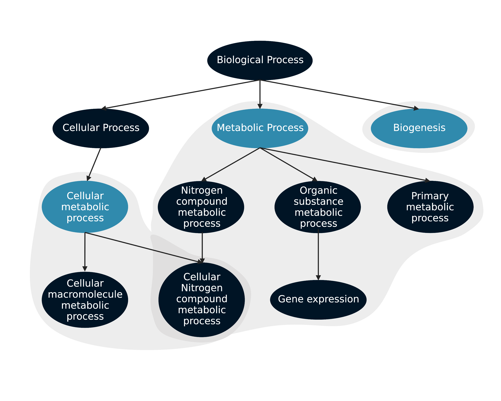

Short Examples
Basic enrichment
Gopher can takes a proteomic file with the UniProtKB accessions as the index and quantitative values (p-value, intensity, fold change, etc.) as the columns.
Example input:
| index | Sample 1 | Sample 2 | Sample 3 |
|---|---|---|---|
| P10809 | 3.95430112E+08 | 3.83382752E+08 | 5.11112448E+08 |
| Q9Y6Y0 | 1.18023552E+09 | 1.24697638E+09 | 8.1498893E+08 |
| … | … | … | … |
import gopher
# Perform the GO enrichment analysis:
results = gopher.test_enrichment(proteins=quant_proteins)
Gopher returns a dataframe with the following columns:
- GO ID: String with the gene ontology term ID.
- GO Name: String with the gene ontology term name.
- GO Aspect: String with the gene ontology aspect. Either C (cellular component), F (molecular function), and B (biological process).
- Columns containing p-values from the GO enrichment.
Example output:
| GO ID | GO Name | GO Aspect | Sample 1 | Sample 2 | Sample 3 |
|---|---|---|---|---|---|
| GO:0000228 | nuclear chromosome | C | 0.1271222 | 0.2485581 | 0.1503805 |
| GO:0005737 | cytoplasm | C | 0.5443486 | 0.0049575 | 0.0183452 |
| GO:0009986 | cell surface | C | 0.9657132 | 0.9962968 | 0.9997324 |
| … | … | … | … | … | … |
You can run an enrichment on one specific aspect:
We have three aspects we can search, cellular component (cc), molecular function (mf), and biological process (bp). More detail on gene ontology aspects can be found here.
# Perform the GO enrichment analysis searching on the cellular component aspect:
results = gopher.test_enrichment(proteins=quant_proteins, aspect="cc")
Or on a subset of terms:
terms = [
"cytoplasm",
"nucleus",
"cell surface",
"protein folding",
"dna repair"
]
# Peform the GO enrichment analysis:
results = gopher.test_enrichment(proteins=quant_proteins, go_subset=terms)
If you search a subset of terms, the DAG algorithm will run to aggregate all child terms of the terms of interest.
The DAG algorithm is a hybrid depth-first search and breadth-first search. The algorithm will find the first child of the term of interest and then find all it’s children and grandchildren until it finds all descendants from than child. It will and annotate those descendants with the term of interest and go to the next child of the term of interest and repeat until all descendants have been annotated. If a child term is also a term of interest, it does not get aggregated into the other term. If two terms of interest share a child, the child is annotated by both terms.

You can turn this off using the aggregate_terms parameter. When you turn off the aggregate_terms parameter, gopher only searches for proteins directly associated with the term of interest.
If using a file where the quant values are p-values, you can rank in ascending order.
By default, gopher ranks values by descending order, larger values will have a lower rank. The ranking order can be switched by setting the desc parameter to False.
File parsers
Gopher can format an encyclopeDIA and metamorpheus file for the enrichment
The output of encyclopeDIA and metamorpheus can be directly inputed to gopher using the read_encyclopedia and read_metamorpheus functions. These functions will format the data for the enrichment.
# Read data from an EncyclopeDIA output:
proteins = gopher.read_encyclopedia("results.quant.elib.proteins.txt")
# Peform the GO enrichment analysis:
results = gopher.test_enrichment(proteins=proteins)
Normalization
If raw intensities are used, you can normalize your data using the proteomic ruler approach (Wiśniewski JR, et al, 2014). This approach is built off the following equations presented in the proteomic ruler paper: